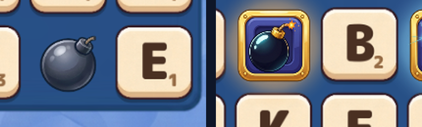

Ожидание на поле
Три бонуса ждут хода: плитка дышит, аура мерцает, искры выходят по очереди на каждый.
- пульс
- 3.2 рад/с, ±7 %
- аура
- 0.30 → 0.85 α
- искры
- раз в 0.7 с
Бомба, ракета и фейерверк: золотые оправы с аурой и пульсом на поле, ракета носом по
курсу с дымно-искровым шлейфом, салюты из светящихся комет, конфетти и бликов, взрыв с
огненным ядром и ударной волной. Клипы сняты покадрово прямо из игры тестами
WordFallVfxShowcase — это ровно то, что видит игрок.

Три бонуса ждут хода: плитка дышит, аура мерцает, искры выходят по очереди на каждый.
Фитиль раздувает бомбу, дальше вспышка, огненное ядро, ударная волна, крутящиеся обломки корпуса, огненные кометы, дым и тряска поля.
На старте корпус приседает и вытягивается, под соплом — вспышка зажигания, горячее кольцо, угли и кольцо пыли; треть пути разгон, дальше ровная скорость до самой цели; на попадании корпус исчезает мгновенно — остаются кольцо, тонированная вспышка, кометы трёх цветов, конфетти и блики.
Сначала бонус рвётся сам — вспышка, шар из комет трёх цветов, конфетти и блики, — затем залп ракет по клеткам, каждая со своим салютом.
ParticlesVelocityStretchEffect разворачивает частицу по скорости и
чуть вытягивает её — искры становятся кометами. FlightTrajectoryComponent
получил alignToDirection: актор смотрит по касательной траектории.
Саб-трековые эмиттеры теперь симулируются и в игровой сборке без редактора
(SimulateTo), копия эмиттера сохраняет все параметры эмиссии,
одноразовый эмиттер по концу длительности гасит все частицы, а саб-трек, когда
кадр перешагивает конец его окна, один раз дотягивает цель до конца — салют
больше не замирает полупрозрачным пятном до отключения ракеты. Pivot виджета
теперь сохраняется в прототип — раньше ракета крутилась и салютовала вокруг
своего угла и «прилетала в угол» клетки.
Иконки, оправа, комета, блик, конфетти, обломок и четыре VFX-текстуры сгенерированы Gemini; у свечений альфа восстановлена из яркости, цвет задают градиенты частиц. Светящиеся частицы рисуются аддитивным материалом.
Эмиттеры собираются из конфига: изображение, гравитация, демпфирование, градиент, кривая размера, растяжение и смешивание. Взрыв бомбы — шесть эмиттеров, попадание ракеты — три, центральный взрыв фейерверка — шесть.
В прототипе плитки появились слои bonusGlow и bonusPlate;
вьюха поля качает масштаб, красит ауру под вид бонуса, трясёт поле и салютует
появлению нового бонуса.
Набор WordFallVfxShowcase проверяет, что каждый этап рождает частицы,
и сам снимает эти клипы: эффект живёт доли секунды, поэтому проверки идут
покадрово во время съёмки.